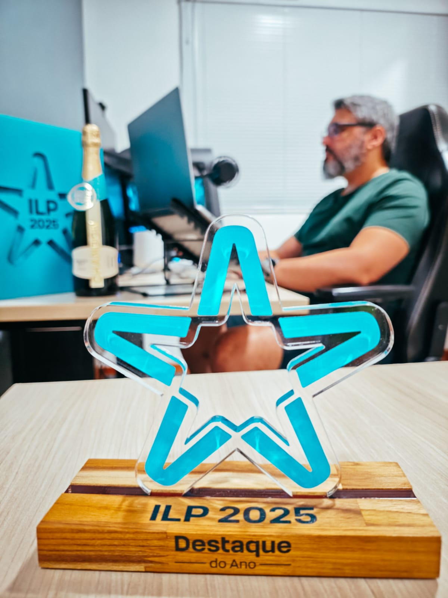
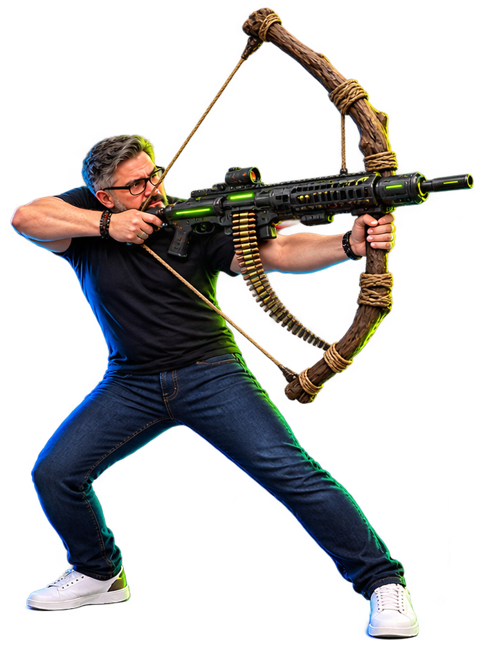
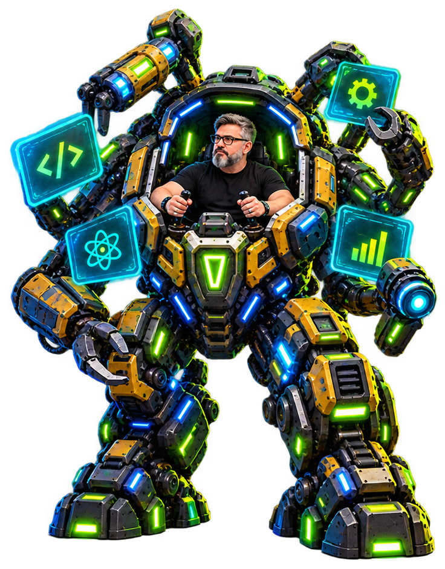

UBM · Engenharia de Software · 19.10.2026
Engenharia de Software na prática
da formação acadêmica aos desafios e oportunidades do mercado de tecnologia
www.BrunoNardini.com.br
git log --reverse
Eu comecei aqui.
Ex-aluno de Ciência da Computação da UBM.
mesma cadeira · outro ano
whoami
nardini@ubm: ~
$whoami
Principal Engineer
$cat empresa.txt
TOTVS

mercado de tecnologia
As melhores empresas de tecnologia do Brasil
Exame Melhores e Maiores 2026 · Tecnologia e Telecom · nota: rentabilidade, liquidez, crescimento e ESG
dica
01
Conheça o mercado de trabalho.
Mercado de TI não é um lugar só.
estou aqui
01
Produto
Cria o software e vende para muitos clientes. Hoje, quase sempre como SaaS.
→ sistema que dura, cliente real, legado
TOTVS, Senior, VTEX, Conta Azul
02
Serviço
Consultoria, fábrica de software, outsourcing. O problema é de outra empresa.
→ variedade, prazo, stack que muda
CI&T, Stefanini, Accenture, IBM, Capgemini
03
Infraestrutura
Conectividade e nuvem (IaaS/PaaS). A base onde o software dos outros roda.
→ escala, disponibilidade, operação 24/7
Vivo, TIM, Claro, AWS, Google Cloud, Azure
04
Dentro de outro negócio
Banco, indústria, varejo, hospital, governo. O software serve ao negócio principal.
→ a regra do setor, e fica perto daqui
Itaú, Magalu, Ambev, Petrobras, CSN
E cada um existe em qualquer tamanho:
startup→ escopo largo, aprende rápido, é aposta
média→ meio-termo entre autonomia e estrutura
grande→ processo, especialização, estabilidade
o tronco comum de quase toda empresa
01
Júnior
Todo mundo fica bravo com ele.
02
Pleno
Acha que é sênior. Ganha como júnior.
03
Sênior
Fica bravo com todo mundo.
É brincadeira.
a ilusão da hard skill
Saber programar é o ingresso.
Não é a diferença.
experiência + soft skills
hard skills
experiência vira confiança
O sênior já viu dar certo.
E já viu dar errado.
Experiência vem de passar por vários projetos e desafios diferentes, e ver na prática as consequências das escolhas. Suas e do time.
Senioridade é confiança.
o que a escada recompensa
Não é só escolher a melhor solução.
não promove sozinho
- ×Tempo de casa
- ×Stack da moda
- ×Hora extra como identidade
- ×"Eu termino tudo sozinho"
- ×Título que você se deu no LinkedIn
promove
- ✓Comunicar com o próprio time
- ✓Alinhar o operacional com o estratégico
- ✓Defender uma ideia
- ✓Ouvir as pessoas
- ✓Destravar impedimentos
depois do sênior, o caminho abre
Especialista
Staff
Senior Staff
Principal
Distinguished / Fellow
Gestão
Engineering Manager
Diretor
VP
CTO
Produto
Product Manager
Group PM
Diretor de Produto
CPO
última fileira
Sênior
↑
Pleno
↑
Júnior
o mesmo nome, outra régua
O mesmo crachá. Outro trabalho.
Bruno Nardini
Sênior
startup de 20 pessoas
Faz de tudo, decide rápido e responde pelo produto inteiro.
Bruno Nardini
Sênior
milhões de clientes
Pensa em escala, disponibilidade e impacto em vários times.
Bruno Nardini
Sênior
setor regulado
Domina segurança, compliance e auditoria.
Antes de comparar cargos, compare o problema.
o paralelo
O tabuleiro é da empresa.
A partida é sua.
como a empresa organiza
Cargos, níveis e colunas pensados para o trabalho dela. Os nomes e o tamanho de cada degrau mudam de uma empresa para outra.
como você constrói
Uma carreira que atravessa várias empresas. O cargo fica para trás quando você sai; o que você aprendeu vai junto.
Alinhe as oportunidades com a carreira que você quer para você.
Se você não sabe para onde ir,
qualquer caminho serve.
um plano que respira
recalculando rota…
Ninguém desliga o GPS porque a rota mudou.
e às vezes, quem muda é o mapa
A mudança vem em ondas de transformação.
anos 90
Internet e Web
O software sai da máquina do usuário e vai para o navegador.
anos 2000
Web 2.0 e SaaS
O usuário passa a criar conteúdo, e o software vira assinatura que atualiza o tempo todo.
anos 2000–2010
Virtualização e Cloud
O servidor deixa de ser uma máquina e vira um serviço.
2007–2010+
Smartphones e Mobile
O usuário passa a estar no bolso, sempre conectado.
anos 2010
Containers, DevOps e Cloud Native
Quem constrói também opera, e o deploy vira rotina.
anos 2010
Big Data e Machine Learning
O dado vira produto, e os sistemas começam a aprender com o uso.
IA
o mercado · o hype · a visão de dentro
a pergunta de um milhão de tokens
A IA é só barulho, ou é a próxima onda de transformação?
A visão de quem está dentro das empresas.
~2010 · a cloud
A história não se repete, mas ela rima.
~2010 · cloud
agora · IA
↔
Empresas criadas já com o negócio na nuvem
Empresas criadas já com o negócio em IA
Empresas nascendo para completar o ecossistema
Empresas nascendo para completar o ecossistema
Papéis novos
SREPlatform EngineerCloud Security Engineer
Papéis novos
AI Platform EngineerAI Evaluation EngineerAI Safety Engineer
Times reorganizados com a cultura DevOps
Cada empresa testando um jeito novo de se organizar
pague só pelo que usar
A conta chegou.
fatura · cloud
itemestimativareal
execuções das funções
4 milhõesUS$ 0,80
2,4 bilhõesUS$ 480,00
tempo × memória
0,2 s × 128 MBUS$ 1,67
1 s × 1,5 GBUS$ 60.000,12
requisições de API
2 milhõesUS$ 7,00
1,1 bilhãoUS$ 3.271,10
transferência de dados
300 GBUS$ 27,00
38 TBUS$ 3.358,72
fatura · IA
itemestimativareal
tokens de entrada
1,5 milhãoUS$ 15,00
1,84 bilhãoUS$ 18.400,00
tokens de saída
300 milUS$ 15,00
656 milhõesUS$ 32.800,00
agentes rodando
1 agente1 hora
10 agentes14 horas
certeza é de graça
Apareceram os profetas.
ASArquiteto de Soluções · Thought Leader2013
Serverless é o fim do backend como a gente conhece. Ponto.
3.214 reações · 512 comentários
o tempo respondeuo backend continua aí
CECloud Evangelist · NoOps Advocate2012
Com a nuvem, ninguém mais precisa de time de infraestrutura. O futuro é NoOps. 🚀
4.812 reações · 937 comentários
o tempo respondeuvirou SRE e plataforma
TITech Influencer · Keynote Speaker2014
Monolito é coisa do passado. Daqui a pouco, tudo vai ser microsserviço.
2.907 reações · 688 comentários
o tempo respondeumonolito ainda é muito usado
CICIO · 30 anos de mercado2011
Banco nunca vai colocar dado na nuvem. Não é seguro. Anotem.
1.530 reações · 1.204 comentários
o tempo respondeuamplamente usado pelos bancos
as profecias de agora · 1 de 3
Os céticos.
DSDev Sênior · 25 anos de código2025
IA é só um autocomplete glorificado. Para código sério, não serve.
2.311 reações · 846 comentários
o que eu vejo de dentroagentes autônomos já são uma realidade
AMAnalista de Mercado · Investidor-anjo2025
É bolha. Vai estourar igual ao metaverso. Anotem.
5.927 reações · 1.488 comentários
o que eu vejo de dentrovirou valor da empresa
CTCTO · Old school2026
Nenhuma empresa séria vai deixar IA mexer no código de produção.
1.874 reações · 1.102 comentários
o que eu vejo de dentrotoda alteração ou código novo passa pela IA
as profecias de agora · 2 de 3
O código.
FVFounder · Vibe Coder · Building in public2026
Ninguém mais vai precisar ler código. Quem lê código em 2026 está perdendo tempo.
6.402 reações · 1.931 comentários
o que eu vejo de dentroa revisão continua. agora em camadas.
MCMentor de Carreira · Ex-dev2025
Não precisa mais aprender a programar. É só descrever o que você quer.
8.115 reações · 2.240 comentários
o que eu vejo de dentroespecificar é só parte do processo
GHGrowth Hacker · No‑code → AI‑code2026
Código virou descartável. Quebrou? Pede para a IA gerar de novo.
3.778 reações · 905 comentários
o que eu vejo de dentromais IA, mais guardrailstesteslintCI/CDrollout
o código · além do prompt
Não é mágica. É engenharia.
pedido → → software pronto
pessoa nova no timeagenteprática
Uma tarefa bem explicadaEspecificaçãoSDDSpeckit
Entender como o sistema funcionaContexto do códigografoGraphify
Acesso às ferramentasConexão com sistemas e dadosMCP
Aprender o jeito do timeInstruções reutilizáveisskills
Revisão do que ela fezVerificaçãoguardrailstestesCIjá vimos
o código · spec driven development
A especificação manda.
O contexto sustenta.
02refinar
a IA ajuda a validar a spec
contextografo do código
O agente entende como as partes do sistema se ligam antes de mexer.
ferramentasMCP
O agente consulta o ticket, a documentação e os sistemas de que precisa.
jeito do timeskills
O agente segue os padrões do time, do teste ao pull request.
as profecias de agora · 3 de 3
A profissão.
AEAI Evangelist · Founder · Ex-dev2026
Em 2 anos, ninguém mais vai programar. 🤖
9.341 reações · 2.876 comentários
o que eu vejo de dentroo trabalho mudou de lugar: especificar, revisar, decidir
RTRecrutador Tech · Talent Hunter2025
Acabou a vaga de júnior. Nenhuma empresa vai contratar iniciante.
7.208 reações · 3.115 comentários
o que eu vejo de dentronão acabou. o mercado está em transição.
CCCoach de Carreira · Autodidata2026
Faculdade de computação não serve mais para nada.
11.502 reações · 4.390 comentários
o que eu vejo de dentroa IA não te dá a base. a faculdade dá.
a IA é um amplificador
A IA potencializa você. Para qual lado?

potência no lugar errado
você

potência no lugar certo
como atravessar
Mar calmo nunca fez bom marinheiro.
lógica e algoritmos
estruturas de dados
arquitetura
segurança
redes e sistemas
engenharia de software
a IA da vez
agentes
o framework da moda
a ferramenta nova
A ferramenta muda a cada onda. A base atravessa todas.
pull request · sua-carreira → main
Antes do merge, um code review.
#2026 · sua-carreira → main
em revisãoaprovado
BNnardiniissue (bloqueante)
Construa uma base forte.
A ferramenta muda a cada onda; o que você aprende aqui atravessa todas as ondas.
BNnardinisuggestion
Use a IA como meio, não como fim.
Use para estudar, explorar e produzir mais, sem terceirizar o raciocínio.
BNnardinisuggestion
Vá além do código.
Entenda o negócio, organize processos, comunique, lidere. É isso que transforma conhecimento em impacto.
BNnardinithought
Tenha um norte, e recalculem sem medo.
O tabuleiro é da empresa. A partida é sua.
be so good they can't ignore you
Seja tão bom
que eles não possam te ignorar.
Steve Martin
ask me anything
Agora, quem responde é um humano.
Aqui não existe prompt ruim.
Obrigado!
Bruno Nardini · Principal Engineer
www.BrunoNardini.com.br
os slides estão no site
nardini · engenharia de software na prática